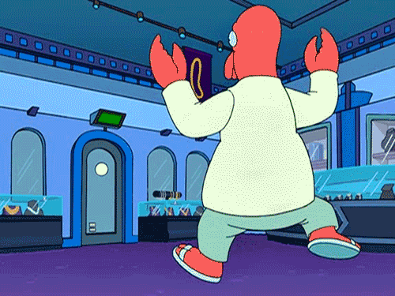

Как правильно вести себя на новой работе.
10 вредных советов
Алена Батицкая
Как правильно вести себя на новой работе
10 вредных советов
warning
Все рассказанное в рамках этой презентации является гротескным пеувеличением и шуткой.
Но в каждой шутке есть доля правды.
Основано на реальных болях лидов, тех.диров, руководителей компаний.
Совет №1
Как можно чаще используйте фразы:
- Кто вообще писал этот код?
- Тут проще все удалить и заново написать
- Какое старье…
Сочетать с презрительным и брезгливым взглядом.

Совет №2
- Спросите коллегу о технологиях/инструментах, которыми он пользуется
- Рассмейтесь ему в лицо
Совет №3
Не задавайте вопросов!
Никаких. Никому.
Совет №4
Если вам навязывают принятые в компании стайлгайды, то округляйте глаза восклицайте:
Код-стайл? Какой еще код-стайл?
Вам лучше знать как писать ваш код.
Совет №5
Если вам все же навяжут некие правила, то по каждому пункту спрашивайте:
А вот это правило обязательно соблюдать? Просто я привык делать иначе...

Совет №6
Открыв макет, сразу начинайте верстать. Помните, никаких вопросов.
Вы делаете нужную работу, даже если половина блоков уже сверстана и есть в интерфейсе.
Совет №7
Не показывайте свой код никому. Негоже чтобы в вашем коде копались другие.
Никаких pull-реквестов и код-ревью.
Совет №8
В разговоре с коллегами постоянно начинайте фразу со слов:
А вот на моей прошлой работе...
Совет №9
В тасках и ТЗ обычно не пишут ничего нужного. Не вникайте в написанное, не тратьте на это свое драгоценное время.
Совет №10
Не заморачивайтесь за нейминг.
Если встретили уникальный компанент, который встречается на одной-единственной странице - смело называйте его page-block.

Golden rule
В конце дня смело комиттье незаконченный код прямо в продакшен.
Вставайте и уходите.
Для надежности выключите телефон.
Адекватных коллег всем!
Алена Батицкая